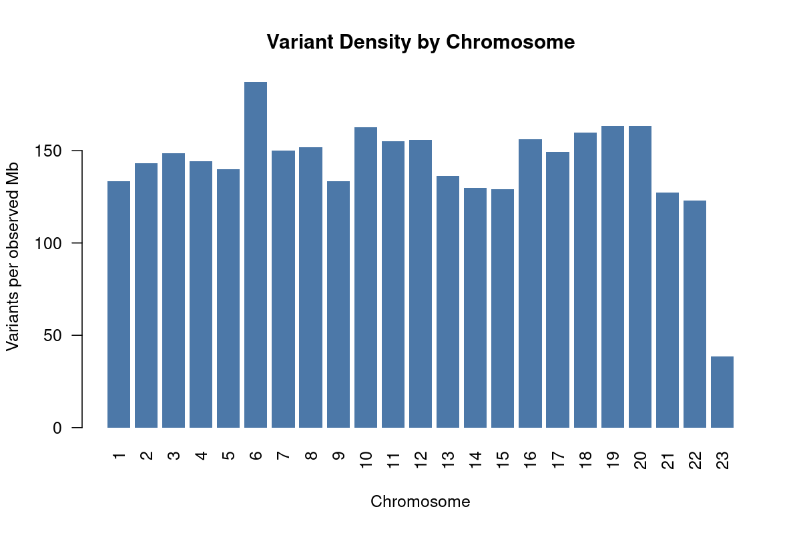
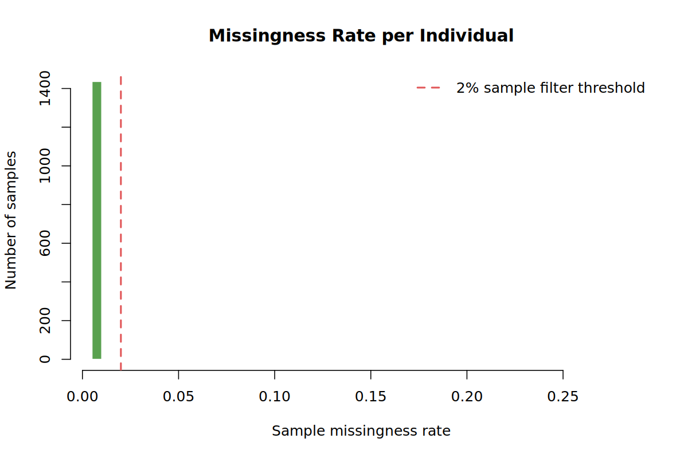
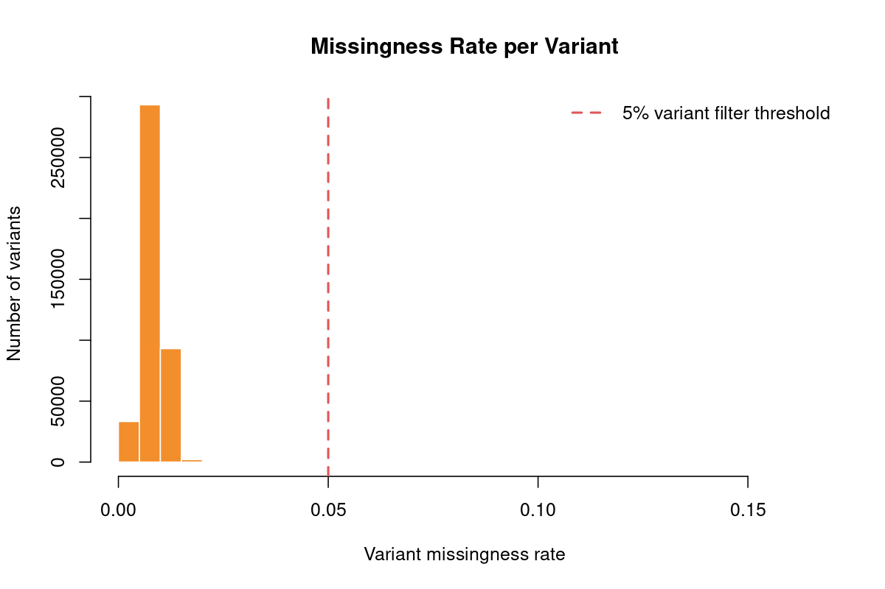
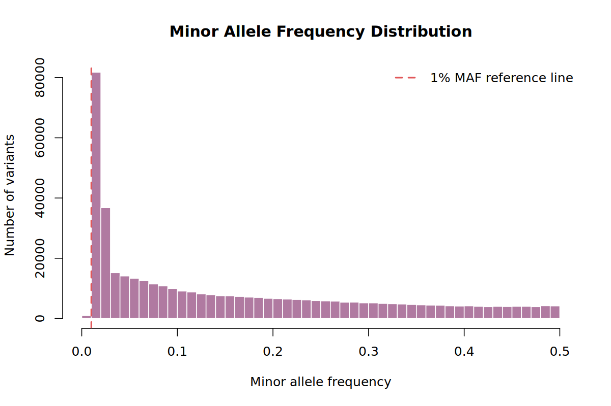
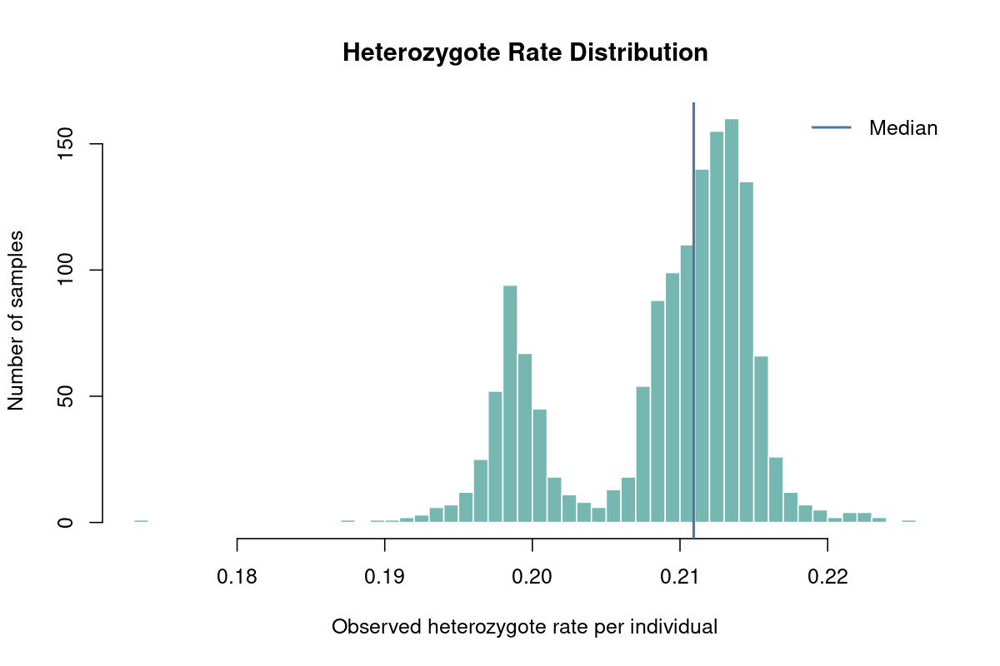
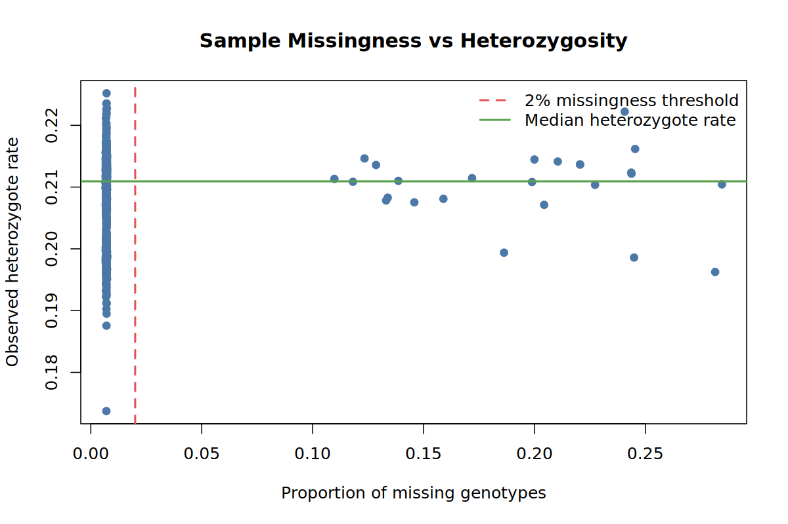
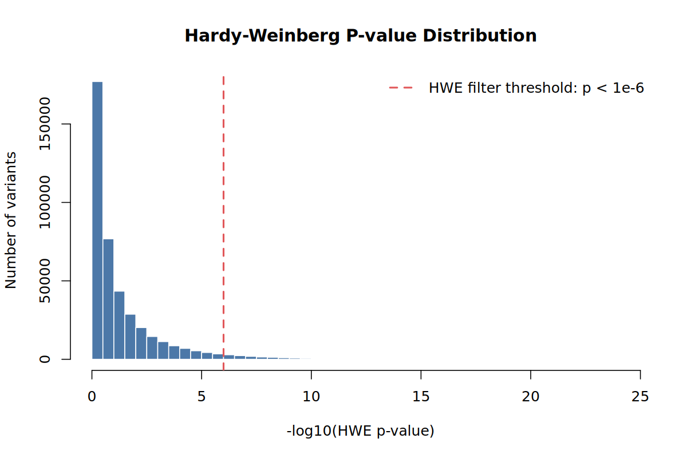

Genotyping quality control
Real genotype data is never perfect. Some samples have too many missing calls, some variants are poorly measured, sex labels can be wrong, and related individuals can break the independence assumption used by standard GWAS tests. Quality control (QC) removes or flags these problems before any association analysis.
This page is the canonical QC tutorial for the website. The source scripts live in sections/01B_genotyping_qc/scripts/, but learners run the copied scripts from their tutorial working folder:
~/gwas_tutorial/
├── demo_data/
├── scripts/01B_genotyping_qc/
└── results/qc/Finish Before you start first. You should have:
demo_data/pdac_demo.beddemo_data/pdac_demo.bimdemo_data/pdac_demo.famdemo_data/phenotype.txt- working
plink2,plink, andRscriptcommands
All commands below are run from the project root, for example ~/gwas_tutorial.
The commands write your local results to results/qc/. The figures and tables displayed on this web page are example outputs from this repository folder:
sections/01B_genotyping_qc/results/Your own numbers may differ if you change thresholds, use a different random seed, or run the workflow on another dataset.
What QC Does
The demo QC pipeline is intentionally stepwise. Each script runs one check, writes output to results/qc/, and prints the next command to run.
Raw demo genotypes: demo_data/pdac_demo.bed/.bim/.fam
|
| 01 Initial QC statistics
| 02 Sample call rate
| 03 Sex check
| 04 Heterozygosity outliers
| 05 Variant call rate
| 06 Hardy-Weinberg equilibrium
| 07 Relatedness
| 08 Minor allele frequency
| 09 QC summary report
v
Clean genotypes: results/qc/pdac_demo_08_filt.bed/.bim/.famFor teaching, we do not hide the QC decisions inside one long command. Running one step at a time lets you see how many samples or variants each filter removes. That is how you catch mistakes early.
Run the QC Pipeline
01 - Initial QC Statistics
Why. Before removing anything, measure the dataset. This step creates baseline allele frequency, heterozygosity, sample missingness, and variant missingness summaries.
bash scripts/01B_genotyping_qc/01_initial_qc_stats.shMain outputs:
results/qc/pdac_demo_01_qc.afreq
results/qc/pdac_demo_01_qc.het
results/qc/pdac_demo_01_qc.smiss
results/qc/pdac_demo_01_qc.vmiss
results/qc/pdac_demo_01_qc_variant_density_by_chromosome.tsv
results/qc/pdac_demo_01_qc_variant_density_by_chromosome.png
results/qc/pdac_demo_01_qc_sample_missingness_histogram.png
results/qc/pdac_demo_01_qc_variant_missingness_histogram.png
results/qc/pdac_demo_01_qc_allele_frequency_distribution.png
results/qc/pdac_demo_01_qc_heterozygote_rate_distribution.png
results/qc/pdac_demo_01_qc_sample_missingness_vs_heterozygosity.pngHow to read the outputs.
*.smiss: one row per sample;F_MISSis the proportion of missing genotypes.*.vmiss: one row per variant;F_MISSis the proportion of samples missing that variant.*.afreq: allele frequencies; useful for checking rare and common variant content.*.het: per-sample heterozygosity and inbreeding coefficient information.
Example Step 01 plots:

This plot checks whether variants are spread across the genome in a plausible way. Large missing chromosomes or strong chromosome-specific gaps would suggest a data preparation problem.


Most samples and variants should have low missingness. The sample call-rate filter in Step 02 and variant call-rate filter in Step 05 act on these distributions.

This plot shows how many variants are rare, low-frequency, or common. In a rare-cancer study we avoid an aggressive MAF threshold because low-frequency variants may still be informative.


The scatter plot is a quick contamination check: samples with both unusual missingness and unusual heterozygosity deserve attention before downstream analysis.
02 - Sample Call Rate
Why. Samples with too many missing genotypes often reflect poor DNA quality, lab failure, or platform problems. In a rare cancer GWAS, every sample is valuable, but very low-quality samples can harm the entire analysis.
bash scripts/01B_genotyping_qc/02_sample_callrate.shThis applies:
--mind 0.02--mind 0.02 removes samples with more than 2% missing genotypes. In the demo run this removed 25 samples, leaving 1,436 samples.
Main outputs:
results/qc/pdac_demo_02_samples_callrate.mindrem.id
results/qc/pdac_demo_02_samples_keep.txt
results/qc/pdac_demo_02_filt.bed
results/qc/pdac_demo_02_filt.bim
results/qc/pdac_demo_02_filt.famOpen pdac_demo_02_samples_callrate.mindrem.id if you want to see which samples failed. In real data, also check whether removed samples are disproportionately cases, controls, or one contributing cohort.
03 - Sex Check
Why. The genetic data on chromosome X should broadly agree with the recorded sex. A mismatch can indicate a sample swap, data entry error, or contamination.
bash scripts/01B_genotyping_qc/03_sex_check.shThe script writes:
results/qc/pdac_demo_03_sexcheck.sexcheck
results/qc/pdac_demo_03_sexcheck_discordant.txt
results/qc/pdac_demo_03_filt.bed
results/qc/pdac_demo_03_filt.bim
results/qc/pdac_demo_03_filt.famIn the demo run, this step removed 4 samples.
Sex check is not only a biology check. It is also a sample identity check. A sex mismatch may be the first visible sign that labels, sample IDs, or genotype files were mixed.
04 - Heterozygosity Outliers
Why. Extremely high or low heterozygosity can signal contamination, inbreeding, ancestry outliers, or technical artifacts. This step uses autosomal heterozygosity and removes samples outside a standard deviation-based threshold.
bash scripts/01B_genotyping_qc/04_heterozygosity.shMain outputs:
results/qc/pdac_demo_04_het.het
results/qc/pdac_demo_04_het_outliers.txt
results/qc/pdac_demo_04_het_outliers.pdf
results/qc/pdac_demo_04_filt.bed
results/qc/pdac_demo_04_filt.bim
results/qc/pdac_demo_04_filt.famIn the demo run, this step removed 2 samples.
The baseline heterozygosity distribution from Step 01 is shown again here because it is the plot that motivates this filter:
Do not remove a case just because it is visually interesting. Remove it because it clearly fails a documented QC rule. In the final report, keep the threshold and number removed.
05 - Variant Call Rate
Why. Variants missing in many samples are unreliable. Missingness can reflect poor probe performance, batch effects, or genotype calling problems.
bash scripts/01B_genotyping_qc/05_variant_callrate.shThis applies:
--geno 0.05--geno 0.05 removes variants missing in more than 5% of samples. In the demo run this removed 8,480 variants, leaving 421,520 variants.
Main outputs:
results/qc/pdac_demo_05_filt.bed
results/qc/pdac_demo_05_filt.bim
results/qc/pdac_demo_05_filt.famThe Step 01 variant missingness plot shows why this filter exists:
06 - Hardy-Weinberg Equilibrium
Why. Strong Hardy-Weinberg equilibrium (HWE) deviations in controls often indicate genotyping errors. In a case/control GWAS, controls are the safer group for this filter because true disease variants may deviate in cases.
bash scripts/01B_genotyping_qc/06_hardy_weinberg.shThis uses demo_data/phenotype.txt to identify controls, then removes variants with control-only HWE p-value below 1e-6.
Main outputs:
results/qc/pdac_demo_06_controls.txt
results/qc/pdac_demo_06_hwe.hardy
results/qc/pdac_demo_06_hwe_pvalue_distribution.png
results/qc/pdac_demo_06_hwe_exclude.txt
results/qc/pdac_demo_06_filt.bed
results/qc/pdac_demo_06_filt.bim
results/qc/pdac_demo_06_filt.famIn the demo run this step removed 14,573 variants, leaving 406,947 variants.

For disease GWAS, avoid filtering on HWE calculated in all samples if cases are included. A real disease association can create deviation in cases. This tutorial therefore performs the HWE filter using controls.
08 - Minor Allele Frequency
Why. Very rare variants can be unstable in small studies. For PDAC we keep the threshold low (--maf 0.01) because rare and low-frequency variants may be important in rare cancers.
bash scripts/01B_genotyping_qc/08_maf_filter.shThe cleaned dataset is:
results/qc/pdac_demo_08_filt.bed
results/qc/pdac_demo_08_filt.bim
results/qc/pdac_demo_08_filt.fam
results/qc/pdac_demo_08_afreq.afreqIn the demo run this step removed 5,038 variants, leaving 401,909 variants and 1,239 samples.
Many standard GWAS workflows use --maf 0.05. That is often reasonable for common-variant GWAS, but rare cancer studies have fewer cases and may be especially interested in low-frequency effects. This tutorial uses --maf 0.01 as a teaching example of a less aggressive threshold.
09 - QC Summary Report
Why. A reproducible GWAS needs a record of every threshold and how many samples or variants were removed at each step. This final step creates one combined PDF report with the count table, QC plots, relatedness diagnostics, and interpretation notes.
bash scripts/01B_genotyping_qc/09_qc_summary.shMain outputs:
results/qc/pdac_demo_09_qc_counts.tsv
results/qc/pdac_demo_09_qc_summary.txt
results/qc/pdac_demo_09_qc_report.pdfThe generated report combines the same checks shown on this page into one review file:
- executive summary and index
- final sample and variant count table
- sample and variant retention plots
- initial QC distributions
- HWE, heterozygosity, and allele-frequency checks
- relatedness and phenotype-aware pruning diagnostics
- method notes for downstream interpretation
Methods Notes and Interpretation
The report also summarizes the QC rules in a methods-friendly table. This is useful when you later write the Methods section of a manuscript or need to explain exactly why a sample or variant was removed.
| Level | Check | Threshold | Interpretation |
|---|---|---|---|
| Sample | Sample call rate | --mind 0.02 |
Remove samples with more than 2% missing genotypes. |
| Sample | Sex check | X chromosome F statistic | Detect sex discordance, swaps, or metadata errors. |
| Sample | Heterozygosity | Autosomal F +/- 3 SD |
Remove strong contamination or heterozygosity outliers. |
| Sample | Relatedness | KING kinship > 0.1875 |
Remove duplicate/twin or first-degree-or-closer related samples. |
| Sample | Relatedness pruning strategy | Phenotype-aware | Prefer removing controls over cases in related case-control pairs. |
| Variant | Variant call rate | --geno 0.05 |
Remove variants missing in more than 5% of samples. |
| Variant | Hardy-Weinberg equilibrium | --hwe 1e-6 in controls |
Remove variants with strong control-only HWE deviation. |
| Variant | Minor allele frequency | --maf 0.01 |
Keep variants with MAF at least 1%; less aggressive for rare cancer. |
The main interpretation points are:
- Rare cancer setting: cases are precious, so sample-level exclusions should be documented.
- Relatedness: KING is used for final pruning, while PI_HAT is reported for comparison with older QC workflows.
- Phenotype-aware pruning: when possible, related case-control pairs are resolved by removing the control.
- Large relatedness loss: inspect relatedness components and removal decisions before continuing.
- Final QC-pass data: the Step 08 dataset is the input for ancestry checks, PCA, and association testing.
Example Report Preview
The example report is a PDF. Some preview browsers automatically download PDFs if they are embedded directly in the page, so the report is shown here as a launch panel instead.
File: sections/01B_genotyping_qc/results/pdac_demo_09_qc_report.pdf
The report includes the final count table, retention plots, initial QC distributions, HWE and MAF checks, relatedness diagnostics, and method notes.
Keep the report with your analysis outputs. It is a compact record of what happened to the data before PCA and association testing, and it gives you the numbers needed for a Methods section.
The demo run used in this page ended with:
| Stage | Samples | Variants | Samples lost | Variants lost |
|---|---|---|---|---|
| Raw data | 1,461 | 430,000 | 0 | 0 |
| Initial stats | 1,461 | 430,000 | 0 | 0 |
| Sample call rate | 1,436 | 430,000 | 25 | 0 |
| Sex check | 1,432 | 430,000 | 4 | 0 |
| Heterozygosity | 1,430 | 430,000 | 2 | 0 |
| Variant call rate | 1,430 | 421,520 | 0 | 8,480 |
| Hardy-Weinberg | 1,430 | 406,947 | 0 | 14,573 |
| Relatedness | 1,239 | 406,947 | 191 | 0 |
| MAF filter | 1,239 | 401,909 | 0 | 5,038 |
Final retention in the demo run was 84.8% of samples and 93.5% of variants.
PDAC-Specific Notes
Pancreatic cancer GWAS is a rare-cancer setting. That changes how we think about QC:
- Removing a case costs power, so sample-level filters should be justified and documented.
- Relatedness pruning should preserve cases when a related case-control pair can be resolved by removing the control.
- Overly aggressive MAF filtering can discard low-frequency signal.
- Population stratification is especially important in multi-consortium analyses.
- If many related samples are real family structure, consider relatedness-aware association methods downstream.
The final QC-pass dataset is the starting point for population stratification and PCA.
References
- Purcell S, Neale B, Todd-Brown K, Thomas L, Ferreira MAR, Bender D, Maller J, Sklar P, de Bakker PIW, Daly MJ, Sham PC. PLINK: a tool set for whole-genome association and population-based linkage analyses. American Journal of Human Genetics. 2007;81(3):559-575. PMID: 17701901.
- Chang CC, Chow CC, Tellier LCAM, Vattikuti S, Purcell SM, Lee JJ. Second-generation PLINK: rising to the challenge of larger and richer datasets. GigaScience. 2015;4:7. This is the main citation for PLINK 1.9 and the second-generation PLINK codebase.
- Cog-Genomics. PLINK 2.0 documentation. Software documentation for the PLINK 2 commands used in this tutorial.
- Manichaikul A, Mychaleckyj JC, Rich SS, Daly K, Sale M, Chen WM. Robust relationship inference in genome-wide association studies. Bioinformatics. 2010;26(22):2867-2873. PMID: 20926424. This is the KING relatedness method used for kinship-based pruning.
- Wigginton JE, Cutler DJ, Abecasis GR. A note on exact tests of Hardy-Weinberg equilibrium. American Journal of Human Genetics. 2005;76(5):887-893. PMID: 15789306.
- A reassessment of Hardy-Weinberg equilibrium filtering in large sample genomic studies. medRxiv. 2024. Preprint supporting careful interpretation of HWE filtering thresholds in large genomic studies.